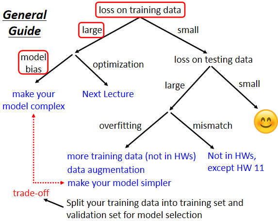
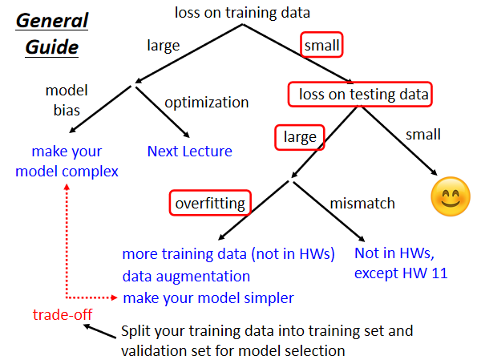
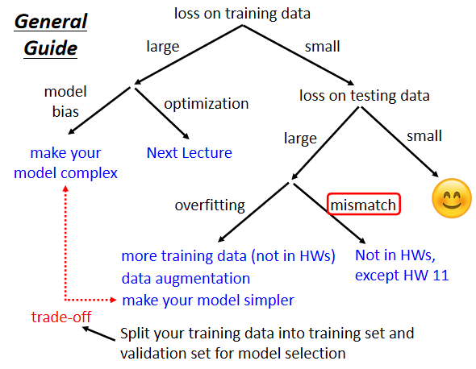
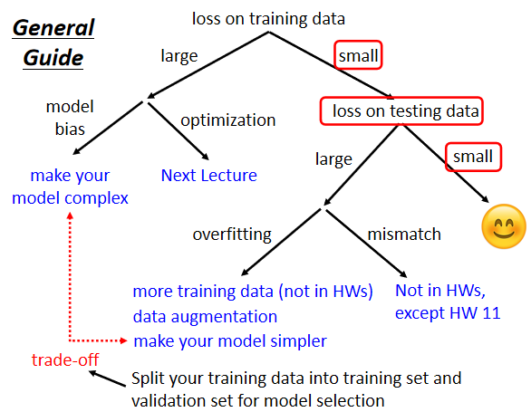
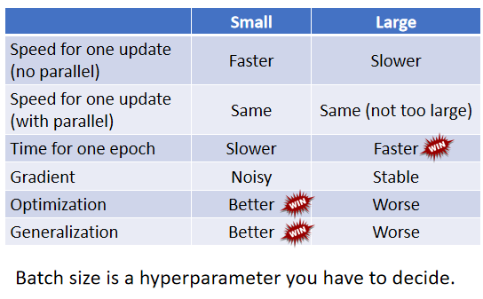
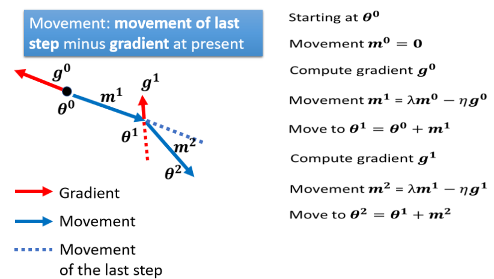
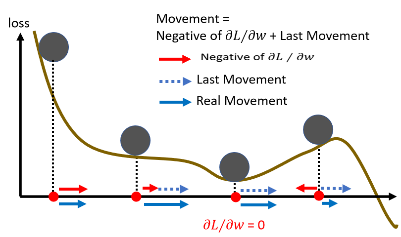

DL-Chapter-2
1 General Guide
当觉得结果不好时，首先应该检查模型在training data上的loss。
若在training data上的loss很大，则有Model bias和Optimization两种可能的问题。
1.1 Model Bias

model bias指设计的model太过简单，弹性不足，本身并不包含正确的解。
需要重新设计一个更加具有弹性的model。
1.2 Optimization Issue
optimization issue指optimization环节使用的方法并无法找出另Loss function最小的参数组合。
判断是Model bias还是Optimization issue的方法：
先跑一个较小的、较浅的Network，甚至用一些不是Deep learning的方法，先看一下这些方法会取得什么水平的loss，如果之后更复杂的模型loss反而更高，那么就是Optimization issue。
如果training data上的loss很小，但testing data上的loss很大，则有可能是Overfitting或mismatch问题。
1.3 Overfitting

在训练集上结果好，在测试集上结果差，则有可能是overfitting问题。
最简单的解决方法是增加训练集（data augmentation，根据对问题的理解，在原有训练集的基础上创造新的训练数据）。
另一个解决方法是给model增加一定的限制，不让他有那么好的弹性，例如：
- 给模型比较少的参数
- 使用比较少的feature
- Early Stopping
- Dropout
1.4 Mismatch

指训练集和测试集的数据分布不一样导致的测试集上loss低，训练集上loss高。

如果training data和testing data上的loss都足够小，就可以结束了。
2 Local minima & saddle point
local minima(局部最小值)和saddle point(鞍点)统称为critical point，训练过程通常都会卡在critical point上。
如何判断训练停在local minima还是saddle point?
对停止处参数$\theta’$附近的Loss function $L(\theta)$作如下估计：(类似于泰勒公式)
$$
L(\theta) \approx L(\theta’) + (\theta - \theta’)^{T}g + \frac{1}{2}(\theta - \theta’)^{T}H(\theta - \theta’)
$$
其中$g$是梯度，$H$是Hessian矩阵：
$$
H_{ij} = \frac{\partial^2}{\partial \theta_i \partial \theta_j}L(\theta’)
$$
在$\theta’$附近，只需关注第三项的符号就能知道函数值和$L(\theta’)$的大小关系，若第三项恒为正，则$\theta’$处是local minima，若恒为负则是local maxima，若时正时负则是saddle point，等价于判断矩阵$H$的正定性，故只需求出矩阵$H$的各个特征值，根据正负特征值的个数判断即可。
2.1 在到达鞍点后如何更新
设$\lambda$是Hessian矩阵的一个负的特征值，$u$是属于$\lambda$的一个特征向量，则$\theta = \theta’ + u$.(证明见课程视频)。
从经验上看，local minima并没有那么常见，多数时候训练到一个地方，梯度很小，参数不再更新了，往往是因为卡在了一个saddle point。

3 batch & momentum
3.1 回顾

3.2 small batch & large batch
小batch：参数更新间隔短
大batch：参数更新间隔长
二者的比较：
- 更大的batch并不一定需要更长的时间计算gradient：由于GPU具有强大的并行运算的能力，一定范围内的batch size并不会对每次参数更新的时间造成显著的影响，相反小batch下参数更新次数过多反而会导致运行时间更长。
- 小batch下”Noisy”的更新方式更有利于训练和测试

3.3 momentum
Momentum是另外一个有可能可以对抗 Saddle Point或 Local Minima 的技术。
在optimization时模拟了物理世界中的“动量”，每次更新参数时都会考虑上一次参数更新的移动方向和移动步长。

而上图中所有的$m^i$都可以用$g^0, g^1, \cdots$来表示：
$$
m^0 = 0\
m^1 = -\eta g^0\
m^2 = \lambda m^1 - \eta g^1 = -\lambda\eta g^1 - \eta g^0\
\cdots
$$

如图，此时参数$\theta$就有可能“越过”local minima而到达$L(\theta)$更小的点。